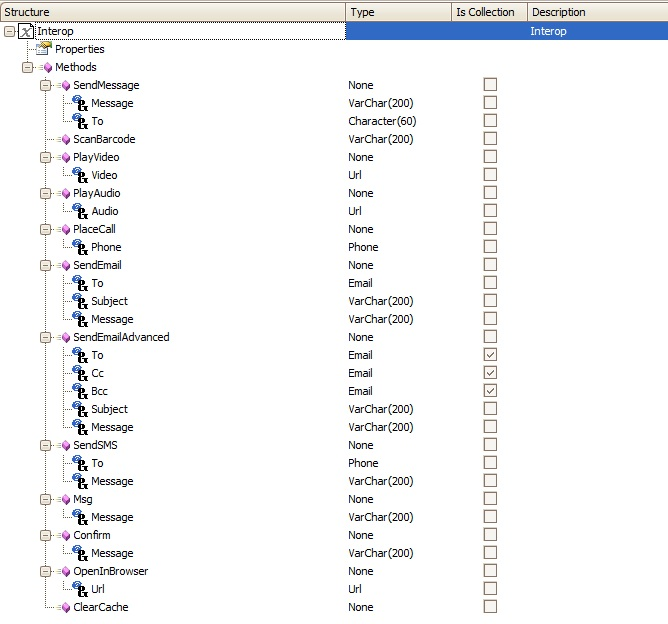

HowTo: Using the PlayAudio Method From Interop in Smart Devices Api
The Interop External Object which can be found under the folder Smart Devices Api provides several methods to interact with the device where the app is executing.  This method, Play Audio, enables the user to listen to an audio track within the application. It receives one parameter base on URL, which will try to reproduce an audio file. This article will show an example of how this feature is used. Firstly, create a new Panel object (i.e.called SDPanel).
Add a new Action to the Layout (Right Click/New Action)
On the event of the action (to go to the event of the action: Double-Click on the button) add the following code:
Event 'Play'
Interop.PlayAudio("http://www.rzaca.com/GSS-10%20Challenge%2018/game%20sound%20FX/Bionic%20Man.wav")
EndEvent
Done! The entry panel will show a button that when is tapped it will redirect the user to a screen with the play pause controls. After the audio file ends, the device goes back to the applicaction.
|


| Backlinks | |
| Audio external object | Interop external object |